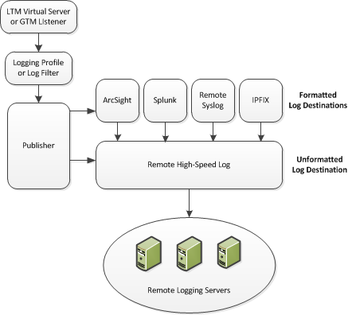
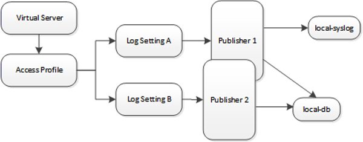

Updated Date: 07/07/2026
Logging and Reporting
You can configure the BIG-IP system to log information about Access Policy Manager® (APM® ) and Secure Web Gateway events and send the log messages to remote high-speed log servers.
When configuring remote high-speed logging of events, it is helpful to understand the objects you need to create and why, as described here:
Note: Enabling remote high-speed logging impacts BIG-IP system performance.
| Object | Reason |
|---|---|
| Pool of remote log servers | Create a pool of remote log servers to which the BIG-IP system can send log messages. |
| Destination (unformatted) | Create a log destination of Remote High-Speed Log type that specifies a pool of remote log servers. |
| Destination (formatted) | If your remote log servers are the ArcSight, Splunk, or Remote Syslog type, create an additional log destination to format the logs in the required format and forward the logs to a remote high-speed log destination. |
| Publisher | Create a log publisher to send logs to a set of specified log destinations. |
| Log Setting | Add event logging for the APM system and configure log levels for it or add logging for URL filter events, or both. Settings include the specification of up to two log publishers: one for access system logging and one for URL request logging. |
| Access profile | Add log settings to the access profile. The log settings for the access profile control logging for the traffic that comes through the virtual server to which the access profile is assigned. |

Access Policy Manager (APM) provides a default-log-setting. When you create an access profile, the default-log-setting is automatically assigned to it. The default-log-setting can be retained, removed, or replaced for the access profile. The default-log-setting is applied to user sessions only when it is assigned to an access profile.
Regardless of whether it is assigned to an access profile, the default-log-setting applies to APM processes that run outside of a user session. Specifically, on a BIG-IP system with an SWG subscription, the default-log-setting applies to URL database updates.
Before creating a pool of log servers, gather the IP addresses of the servers that you want to include in the pool. Ensure that the remote log servers are configured to listen to and receive log messages from the BIG-IP system.
Create a pool of remote log servers to which the BIG-IP system can send log messages.
-
At the top of the screen, click Configuration.
-
On the Main tab, click Local Traffic > Pools.
The Pool List screen opens.
-
Click Create.
The New Pool screen opens.
-
In the Name field, type a unique name for the pool.
-
Using the New Members setting, add the IP address for each remote logging server that you want to include in the pool:
-
Type an IP address in the Address field, or select a node address from the Node List.
-
Type a service number in the Service Port field, or select a service name from the list.
Note: Typical remote logging servers require port
514. -
Click Add.
-
-
Click Finished.
Before creating a remote high-speed log destination, ensure that at least one pool of remote log servers exists on the BIG-IP system.
Create a log destination of the Remote High-Speed Log type to specify that log messages are sent to a pool of remote log servers.
-
On the Main tab, click System > Logs > Configuration > Log Destinations.
The Log Destinations screen opens.
-
Click Create.
-
In the Name field, type a unique, identifiable name for this destination.
-
From the Type list, select Remote High-Speed Log.
Important: If you use log servers such as Remote Syslog, Splunk, or ArcSight, which require data be sent to the servers in a specific format, you must create an additional log destination of the required type, and associate it with a log destination of the Remote High-Speed Log type. With this configuration, the BIG-IP system can send data to the servers in the required format.
The BIG-IP system is configured to send an unformatted string of text to the log servers.
-
From the Pool Name list, select the pool of remote log servers to which you want the BIG-IP system to send log messages.
-
From the Protocol list, select the protocol used by the high-speed logging pool members.
-
Click Finished.
Ensure that at least one remote high-speed log destination exists on the BIG-IP system.
Create a formatted logging destination to specify that log messages are sent to a pool of remote log servers, such as Remote Syslog, Splunk, or IPFIX servers.
-
On the Main tab, click System > Logs > Configuration > Log Destinations.
The Log Destinations screen opens.
-
Click Create.
-
In the Name field, type a unique, identifiable name for this destination.
-
From the Type list, select a formatted logging destination, such as Remote Syslog, Splunk, or IPFIX.
The Splunk format is a predefined format of key value pairs.
The BIG-IP system is configured to send a formatted string of text to the log servers.
-
If you selected Remote Syslog, then from the Syslog Format list select a format for the logs, and then from the High-Speed Log Destination list, select the destination that points to a pool of remote Syslog servers to which you want the BIG-IP system to send log messages.
Important: For logs coming from Access Policy Manager (APM), only the BSD Syslog format is supported.
-
If you selected Splunk or IPFIX, then from the Forward To list, select the destination that points to a pool of high-speed log servers to which you want the BIG-IP system to send log messages.
-
Click Finished.
Ensure that at least one destination associated with a pool of remote log servers exists on the BIG-IP system.
Create a publisher to specify where the BIG-IP system sends log messages for specific resources.
-
On the Main tab, click System > Logs > Configuration > Log Publishers.
The Log Publishers screen opens.
-
Click Create.
-
In the Name field, type a unique, identifiable name for this publisher.
-
For the Destinations setting, select a destination from the Available list, and click << to move the destination to the Selected list.
Note: If you are using a formatted destination, select the destination that matches your log servers, such as Remote Syslog, Splunk, or ArcSight.
-
Click Finished.
Create log settings to enable event logging for access system events or URL filtering events or both. Log settings specify how to process event logs for the traffic that passes through a virtual server with a particular access profile.
-
On the Main tab, click Access > Overview > Event Logs > Settings.
A log settings table screen opens.
-
Select a log setting and click Edit or click Create for a new APM log setting.
A popup screen opens with General Information selected in the left pane.
-
For a new log setting, in the Name field, type a name.
-
To specify logging, select one or both of these check box options:
- Enable access system logs - This setting is generally applicable. It applies to access policies, per-request policies, Secure Web Gateway processes, and so on. When you select this check box, Access System Logs becomes available in the left pane.
- Enable URL request logs - This setting is applicable for logging URL requests when you have set up a BIG-IP system configuration to categorize and filter URLs. When you select this check box, URL Request Logs becomes available in the left pane. Important: When you clear either of these check boxes and save your change, you are not only disabling that type of logging, but any changes you made to the settings are also removed.
-
To configure settings for access system logging, select Access System Logs from the left pane.
Access System Logs settings display in the right panel.
-
For access system logging, from the Log Publisher list select the log publisher of your choice.
A log publisher specifies one or more logging destinations.
Important: The BIG-IP system is not a logging server and has limited capacity for storing, archiving, and analyzing logs. For this reason a dedicated logging server is recommended.
-
For access system logging, retain the default minimum log level, Notice, for each option.
You can change the minimum log level, but Notice is recommended.
|
Access Policy |
Events that occur while an access policy runs. |
|
Per-Request Policy |
Events that occur while a per-request policy runs. |
|
ACL |
Events that occur while applying APM access control lists. |
|
SSO |
Events that occur during single-sign on. |
|
Secure Web Gateway |
Events that occur during URL categorization on a BIG-IP system with an SWG subscription. |
|
ECA |
Events that occur during NTLM authentication for Microsoft Exchange clients. |
|
OAuth |
Events that occur while APM, as an OAuth authorization server, processes requests. |
|
PingAccess Profile |
Events related to PingAccess authentication. Important: For PingAccess authentication, only the log levels defined in default-log-settings apply. |
|
VDI |
Events related to connections to virtual desktop resources. |
|
Endpoint Management System |
Events related to connections to an endpoint management system. |
|
ADFS Proxy |
Events related to ADFS proxy supported in APM. |
|
HTTP Connector |
Events related to HTTP Connector. |
|
WebSSH |
Events related to WebSSH plugin. |
-
To configure settings for URL request logging, select URl Request Logs from the left pane.
URL Request Settings settings display in the right panel.
-
For URL request logging, from the Log Publisher list, select the log publisher of your choice.
A log publisher specifies one or more logging destinations.
Important: The BIG-IP system is not a logging server and has limited capacity for storing, archiving, and analyzing logs. For this reason a dedicated logging server is recommended.
-
To log URL requests, you must select at least one check box option:
-
Log Allowed Events - When selected, user requests for allowed URLs are logged.
-
Log Blocked Events - When selected, user requests for blocked URLs are logged.
-
Log Confirmed Events - When selected, user requests for confirmed URLs are logged. Whether a URL is allowed, blocked, or confirmed depends on both the URL category into which it falls, and the URL filter that is applied to the request in the per-request policy.
-
-
To assign this log setting to multiple access profiles now, perform these substeps:
Note: Up to three log settings for access system logs can be assigned to an access profile. If you assign multiple log settings to an access profile, and this results in duplicate log destinations, logs are also duplicated.
-
Select Access Profiles from the left pane.
-
Move access profiles between the Available and the Selected lists.
Note: You can delete (and add) log settings for an access profile on the Logs page for the access profile.
Note: You can configure the log destinations for a log publisher from the Logs page in the System area of the product.
-
-
Click OK.
The popup screen closes. The table displays.
To put a log setting into effect, you must assign it to an access profile. Additionally, the access profile must be assigned to a virtual server.
Disable event logging when you need to suspend logging for a period of time or you no longer want the BIG-IP system to log specific events.
Note: Logging is enabled by adding log settings to the access profile.
-
To clear log settings from access profiles, on the Main tab, click Access > Profiles / Policies.
-
Click the name of the access profile.
Access profile properties display.
-
On the menu bar, click Logs.
-
Move log settings from the Selected list to the Available list.
-
Click Update.
Logging is disabled for the access profile.
Policy trace is a dB variable that logs policy trace messages on the managed BIG-IP device when enabled. This log message is used to generate Denied Reasons, and Authentication Failure reports. To enable policy tracing from the managed BIG-IP device use the following API call.
BIG-IP API : /mgmt/tm/sys/db/tmm.access.policytrace
PATCH with { “value” : “enabled” }
VPN stats is a dB variable when enabled, allows receiving Bytes Transferred log message for the VPN Sessions. These log messages are generated periodically. To update VPN stats dB variable value for the Big-IP system, use the following API call.
BIG-IP API: /mgmt/tm/sys/db/vpn.logstats
PATCH with { “value” : “enabled” }
Event log levels are incremental, ranging from most severe (Emergency) to least severe (Debug). Setting an event log level to Warning for example, causes logging to occur for warning events, in addition to events for more severe log levels. The possible log levels, in order from highest to lowest severity are:
- Emergency
- Alert
- Critical
- Error
- Warning
- Notice (the default log level)
- Informational
- Debug
Note: Logging at the Debug level can increase the load on the BIG-IP system.
The table breaks a typical Access Policy Manager (APM) log entry into its component parts.
Feb 2 12:37:05 site1 notice tmm[26843]: 01490500:5: /Common/for_reports:Common: bab0ff52: New session from
client IP 10.0.0.1 (ST=/CC=/C=) at VIP 20.0.0.1 Listener /Common/site1_http (Reputation=Unknown)|
Information Type |
Example Value |
Description |
|---|---|---|
|
Timestamp |
Feb 2 12:37:05 |
The time and date that the system logged the event message. |
|
Host name |
site1 |
The host name of the system that logged the event message. Because this is typically the host name of the local machine, the appearance of a remote host name could be of interest. |
|
Log level |
notice |
The text value of the log level for the message. |
|
Service |
tmm |
The process that generated the event. |
|
PID |
[26843] |
The process ID. |
|
Log ID |
01490500 |
A code that signifies the product, a subset of the product, and a message number. |
|
Level |
5 |
The numeric value of the log level for the message. |
|
Partition |
/Common/for_reports:Common |
The partition.to which configuration objects belong. |
|
Session ID |
bab0ff52 |
The ID associated with the user session. |
|
Log message |
New session from client IP 10.0.0.1 (ST=/CC=/C=) at VIP 20.0.0.1 Listener /Common/site1_http (Reputation=Unknown) |
The generated message text. |
The BIG-IP system provides two local logging destinations:
- local-db
- Causes the system to store log messages in the local MySQL database. Log messages published to this destination can be displayed in the BIG-IP Configuration utility.
- local-syslog
- Causes the system to store log messages in the local Syslog database. Log messages published to this destination are not available for display in the BIG-IP Configuration utility.
Note: Users cannot define additional local logging destinations.
The BIG-IP system provides a default log publisher for local logging, sys-db-access-publisher; initially, it is configured to publish to the local-db destination and the local-syslog destination. Users can create other log publishers for local logging.
APM provides preconfigured reports that are based on log data. To view the reports and to display log data from the BIG-IP Configuration utility, configure a publisher to log to the local-db destination.
Important: The BIG-IP system is not a logging server and has limited capacity for storing, archiving, and analyzing logs. For this reason a dedicated logging server is recommended.
-
On the Main tab, click System > Logs > Configuration > Log Publishers.
The Log Publishers screen opens.
-
Select the log publisher you want to update and click Edit.
-
For the Destinations setting, select local-db from the Available list, and move the destination to the Selected list.
-
Click Finished.
To use a log publisher, specify it in an access policy log setting, ensure that the access profile selects the log setting, and assign the access profile to a virtual server.
Note: Log settings are configured in the Access > Overview > Event Log > Settings area of the product.
If Access Policy Manager (APM) events are written to the local database on the BIG-IP system, they can be viewed in APM reports.
Create a report to view event log data.
-
On the Main tab, click Access > Overview > Access Reports.
The Reports Browser displays in the right pane. The Report Parameters popup screen opens and displays a description of the current default report and default time settings.
-
Select the appropriate Restrict by Time settings.
-
Click Run Report.
The popup screen closes. The report displays in the Reports Browser.
You can select and run various system-provided reports, change the default report, and create custom reports.
To view URL request logs from the user interface, your access profile log setting must enable URL request logs. The log setting must also specify a log publisher that publishes to the local-db log destination.
You can display, search, and export URL request logs.
-
On the Main tab, click Access > Overview > Event Logs > URL Request Logs.
Any logs for the last hour are displayed.
Note: APM writes logs for blocked requests, confirmed requests, allowed requests, or all three, depending on selections in the access profile log setting.
-
To view logs for another time period, select it from the list.
-
To search the logs, type into the field and click Search or click Custom Search to open a screen where you can specify multiple search criteria.
-
To export the logs for the time period and filters, click Export to CSV.
If you must have syslog files available on the local device, configure a publisher to log to the local-syslog destination.
Important: The BIG-IP system is not a logging server and has limited capacity for storing, archiving, and analyzing logs. For this reason a dedicated logging server is recommended.
-
On the Main tab, click System > Logs > Configuration > Log Publishers.
The Log Publishers screen opens.
-
Select the log publisher you want to update and click Edit.
-
For the Destinations setting, select local-syslog from the Available list, and move the destination to the Selected list.
-
Click Finished.
To use a log publisher, specify it in an access policy log setting, ensure that the access profile selects the log setting, and assign the access profile to a virtual server.
Note: Log settings are configured in the Access > Overview > Event Log > Settings area of the product.
To stop logs from being written to the /var/log/apm file, remove the local-syslog destination from log publishers that are specified for access system logging in APM log settings.
Important: The BIG-IP system is not a logging server and has limited capacity for storing, archiving, and analyzing logs. For this reason a dedicated logging server is recommended.
-
On the Main tab, click System > Logs > Configuration > Log Publishers.
The Log Publishers screen opens.
-
Select the log publisher you want to update and click Edit.
-
For the Destinations setting, if the Selected list contains local-syslog, move it to the Available list.
-
Click Finished.
To use a log publisher, specify it in an APM log setting, ensure that the log setting is assigned to an access profile, and assign the access profile to a virtual server.
Note: Log settings are configured in the Access > Overview > Event Log > Settings area of the product.
The BIG-IP system publishes logs for portal access traffic and for connections to virtual desktops (VDI) to the /var/log/rewrite* files. APM cannot publish these logs to remote destinations.
APM can publish URL request logs to remote or local destinations. Logs published to the local-db destination are stored in the local database and are available for display from the Configuration utility. Logs published to the local-syslog destination are stored in the /var/log/urlfilter.log file.
APM can publish access system logs to remote or local destinations. Logs published to the local-db destination are stored in the local database. Logs in the local database are available for display in APM reports. Logs published to the local-syslog destination are stored in the /var/log/apm file.
The BIG-IP system log messages contain codes that provide information about the system. You can run the Linux command cat *log* |bigcodes |less at the command prompt to expand the codes in log messages to provide more information. For example:
Jun 14 14:28:03 sccp bcm56xxd [ 226 ] : 012c0012 : (`Product=BIGIP Subset=BCM565XXD`) : 6: 4.1 rx [ OK 171009 Bad 0 ] tx [ OK 171014 Bad 0 ]

The figure illustrates a configuration that writes duplicate logs. Two log publishers specify the same log destination, local-db. Each log publisher is specified in one of the log settings that are assigned to an access profile. Logs are written to the local-db destination twice.
Duplicate log messages are written when the same log destination is specified by two or more log publishers and more than one of the log publishers is specified in the log settings that are assigned to an access profile.
One way to avoid or eliminate this problem is to specify only one log setting for each access profile. Another is to ensure that the log publishers you associate with log settings for an access profile do not contain duplicate log destinations.
Log levels can be configured in various ways that depend on the specific functionality. Log levels for access portal traffic are configured in the System area of the product. The log level for the URL database download is configured in the default-log-setting in the Access > Overview > Event Log > Settings area of the product. The log level for NTLM authentication of Microsoft Exchange clients is configured using the ECA option in any log setting. Other access policy (and Secure Web Gateway) log levels are configured in any log setting.
Before you follow these steps, you must have an access profile that you configured to use for NTLM authentication of Microsoft Exchange clients. You must know the name of the log setting that is assigned to that access profile. (The default-log-setting is assigned by default, but your access profile configuration might be different.)
You can change the level of logging for NTLM authentication for Microsoft Exchange clients.
Note: Logging at the default level, Notice, is recommended.
-
On the Main tab, click Access > Overview > Event Logs > Settings.
A log settings table screen opens.
-
Select the check box for the log setting that you want to update and click Edit.
A popup screen opens.
-
To configure settings for access system logging, select Access System Logs from the left pane.
Access System Logs settings display in the right panel.
-
For the ECA setting, select a log level.
Note: Setting the log level to Debug can adversely impact system performance.
-
Click OK.
The popup screen closes.
Configure logging for the URL database so that log messages are published to the destinations, and at the minimum log level, that you specify. (Logging for the URL database occurs at the system level, not the session level, and is controlled using the default-log-setting log setting.)
Note: A URL database is available only on a BIG-IP system with an SWG subscription.
-
On the Main tab, click Access > Overview > Event Logs > Settings.
A log settings table screen opens.
-
From the table, select default-log-setting and click Edit.
A log settings popup screen displays.
-
Verify that the Enable access system logs check box is selected.
-
To configure settings for access system logging, select Access System Logs from the left pane.
Access System Logs settings display in the right panel.
-
From the Log Publisher list, select the log publisher of your choice.
A log publisher specifies one or more logging destinations.
Important: The BIG-IP system is not a logging server and has limited capacity for storing, archiving, and analyzing logs. For this reason a dedicated logging server is recommended.
-
To change the minimum log level, from the Secure Web Gateway list, select a log level.
Note: Setting the log level to Debug can adversely impact system performance.
The default log level is Notice. At this level, logging occurs for messages of severity Notice and for messages at all incrementally greater levels of severity.
-
Click OK.
The popup screen closes. The table displays.
Change the logging level for access policy events when you need to increase or decrease the minimum severity level at which Access Policy Manager (APM) logs that type of event. Follow these steps to change the log level for events that are related to portal access traffic.
Note: You can configure log levels for additional APM options in the Event Logs area.
-
On the Main tab, click System > Logs > Configuration > Options.
-
Scroll down to the Access Policy Logging area.
Note: The log settings that you change on this page impact only the access policy events that are logged locally on the BIG-IP system.
-
For Portal Access, select a logging level from the list.
Warning: F5 recommends that you do not set the log level for Portal Access to Debug. Portal Access can stop working. The BIG-IP system can become slow and unresponsive.
-
Click Update.
APM starts to log events at the new minimum severity level.